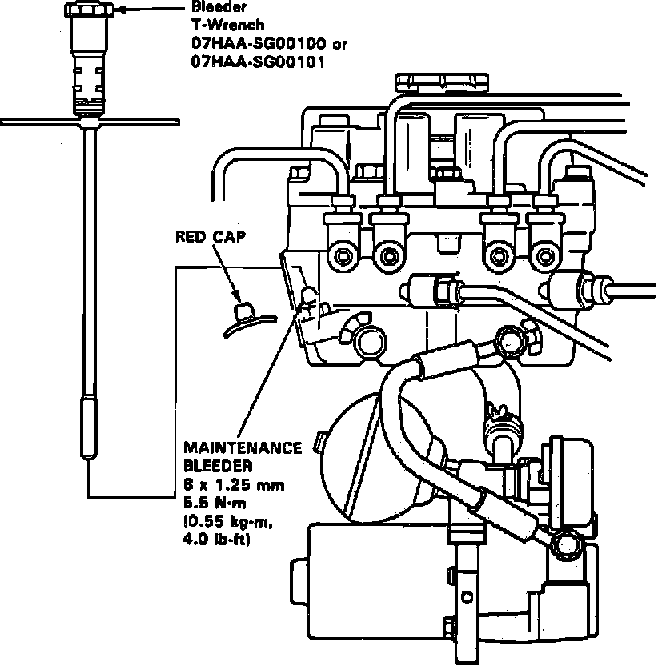

With Anti-Lock Brake (ALB) Checker
Fig. 62 System Air Bleeding:

Fig. 63 System Air Bleeding:

1. Disconnect 6-P inspection connector at crossmember under front passenger seat, then connect inspection connector to ALB checker.
2. Place vehicle on level surface, then block wheels. On models equipped with manual transaxle, place in Neutral. On models equipped with automatic transaxle, place in Park.
3. Using suitable brake fluid, fill modulator reservoir to MAX level.
4. Using tool No. 07HAA-SG00100 or equivalent, bleed high pressure fluid from maintenance bleeder, Fig. 62 and 63. Do not reuse brake fluid.
5. On all 1989-90 models and 1991-93 Integra models start engine, then release parking brake. Select mode 6, depress brake pedal firmly and press start test button. There should be two strong kickbacks. If not, repeat steps 2 through 5.
6. On 1991-93 Legends and 1992,93 Vigor models, start engine, then release parking brake. Turn select mode to 2, 3, 4, 5, then depress start test button. Visually check brake pedal, there should be at least two strong kickbacks. If not, repeat steps 2, 3, 4 and 6.
7. Fill modulator reservoir to MAX level, then install reservoir cap.
8. Check ALB function install modes by using ALB checker.